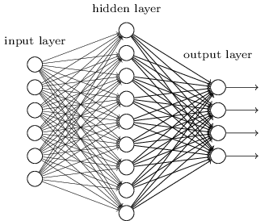

당신은 엔지니어이고 컴퓨터를 처음부터 설계해야한다고 가정하자.
어느 날 당신은 AND 게이트, OR 게이트와 같은 논리 회로를 설계하고 있는데 그때 상사가 나쁜 소식을 가지고 들어온다.
고객이 방금 설계에 대한 다음의 요구 사항을 추가했다:
전체 컴퓨터에 대한 회로는 단 두 개의 층으로 되어 있어야 한다.
당신은 너무 놀라서, "고객이 제정신이냐"고 상사에게 말할지도 모른다.
그러면 당신의 상사는 이렇게 말할 것이다: "나도 고객이 무리한 요구를 한다고 생각한다. 하지만 고객이 원하니, 우리는 들어줘야 한다."
사실 이러한 요구를 들어줄 수는 있다. 원하는 만큼 많은 개수의 입력을 AND 연산할 수 있는, 특별한 논리 게이트logical gate를 사용할 수 있다고 가정해보자. 그리고 많은 수의 입력을 NAND 연산할 수도 있다고 가정하자. 즉 다수의 입력을 AND한 후, 출력에 NOT 연산negate을 하는 게이트를 사용할 수 있다. 이러한 특수한 게이트를 이용하면 단 두개의 층으로 이루어진 회로를 이용해 어떠한 함수도 계산할 수 있다는 사실은 알려져 있다.
하지만 어떤 것이 가능하다는 것이 결코 좋은 아이디어라는 의미는 아니다. 실제로 회로 셀계 문제(혹은 어떤 알고리즘 문제)를 해결할 때, 어떻게 하위문제sub-problem를 풀 수 있는지부터 생각한다. 그런 다음에, 점진적으로 하위문제에 대한 결과를 통합한다. 즉 여러 계층으로 추상화해서 솔루션solution을 만든다.
예를 들어 두 수를 곱셈하는 논리 회로를 설계한다고 가정해보자.
두 수를 더하는 서브 회로sub-circuit를 이용해 회로를 설계할 수 있다.
두 수를 더하는 서브 회로는 두 개의 비트bit를 더하는 서브 회로의 서브 회로sub-sub-circuit을 이용해 설계할 수 있다.
대략적으로 나타내면 회로는 다음과 같다.

즉 최종 회로는 적어도 세 개의 층으로 구성된다.
사실, 하위 문제sub-task를 더 작게 나누어, 세개 이상의 층으로 회로를 구성할 수도 있지만 여기서 얻을 수 있는 일반적인 아이디어를 생각해보자.
결국 깊은 회로deep circuit는 설계 과정을 더 쉽게 만든다.
하지만 깊은 회로가 설계 과정에만 유용한 것은 아니다.
사실, 어떤 함수에 대해서는 매우 얕은 회로shallow circuit가 깊은 회로deep circuit보다 더 많은 회로 구성품을 필요로 한다.
예를 들어 1980년대 초에 소개된 논문*
역사가 꽤 복잡하므로 자세한 참고 자료를 제시하지는 않는다.
초기 역사와 참고자료에 대한 Johan Hastad의 2012년 논문
On the correlcation of parity and small-depth circuit
을 보자.
은
얕은 회로를 이용한다면, 비트 세트a set of bits의 패리티parity를 계산하는데 지수적으로exponentially 많은 게이트가 필요하다는 사실을 보여준다.
반면에 깊은 회로를 사용한다면, 작은 회로small circuit를 이용해 패리티를 쉽게 계산할 수 있다:
단지 비트 쌍의 패리티the parity of pairs of bits를 계산한다면, 이 결과를 이용해 비트 쌍에 대한 쌍의 패리티the parity of pairs of pairs of bits를 계산하여 전체 패리티를 빠르게 계산할 수 있다.
그러므로 깊은 회로는 본질적으로 얕은 회로보다 강력하다.
지금까지는 무리한 요구를 하는 이 고객처럼 뉴럴 네트워크에 접근했다.
우리가 보았던 거의 모든 네트워크는 단지 하나의 은닉층으로 구성되어 있다:

이 간단한 네트워크는 매우 유용하다:
이전의 장에서, 이러한 네트워크를 이용해 손글씨 숫자를 98% 이상의 정확도로 분류했다.
그리고 더 많은 은닉층으로 구성된 네트워크가 더 강력할 것이라는 것을 직관적으로 알 수 있다.
위와 같은 네트워크는 우리가 불 회로Boolean circuit에서 본 것처럼, 중간층intermediate layer을 이용해 다수의 추상화 계층을 구축할 수 있다.
예를 들어 우리가 시각적인 패턴 인식을 한다면, 첫 번째 층에 있는 뉴런은 선edge을 인식하고, 두 번째 층에 있는 뉴런은 인식한 선들을 이용해 삼각형이나 사각형 같은 더 복잡한 모양을 인식할 수 있을 것이다.
그런 다음 세 번째 층에서는 더욱 복잡한 모양을 인식한다.
이러한 다층의 추상화는 복잡한 패턴 인식 문제를 풀기 위한 학습에서의 강력한 이점을 제공한다.
게다가 회로에서 본 것과 비슷하게, 딥뉴럴 네트워크deep network가 얕은 네트워크shallow network보다 본질적으로 강력하다는 이론적인 결과가 있다.*
이는 어떤 문제와 네트워크 구조에 대해
Razvan Pascanu, Guido Montufar, Yoshua Bengio (2014)에 의해
On the number of response regions of deep feed forward networks
with piece-wise linear activations에서 증명되었다.
또는 Yoshua Bengio (2009)의 Learning deep architectures for AI
의 section 2를 보자.
이러한 딥 네트워크deep networks를 어떻게 학습시킬 수 있을까? 이번 장에서는, 역전파backpropagation에 의한 확률적 경사 하강법stochastic gradient descent을 이용해 딥뉴럴 네트워크를 학습시켜 볼 것이다. 하지만 우리는 딥뉴럴 네트워크가 얕은 네트워크보다 좋은 성능을 내지 못하는 문제를 마주할 것이다.
위에서 논의한 내용을 비추어 볼 때 이 실패는 놀라워 보인다. 딥 네트워크를 포기하는 대신에 딥 네트워크를 학습시키는 방법을 이해하고, 파고들어 볼 것이다. 자세히 살펴보면, 딥 네트워크의 서로 다른 층에서 학습을 진행하는 속도가 매우 다르다는 사실을 발견할 것이다. 특히 네트워크에서 뒤에 있는 층이 학습을 잘할 때, 앞에 있는 층에서 학습을 거의 하지 않고 문제에 빠지는 경우가 종종 발생한다. 이러한 문제는 단지 운이 나빠서 나오는 결과가 아니다. 그래디언트gradient 기반의 학습 알고리즘 기술과 연관되어 있는, 학습 속도 저하learning slowdown문제에 대한 근본적인 이유를 살펴볼 것이다.
문제를 심도있게 살펴볼수록, 정반대의 현상이 일어나는 것을 볼 수 있다: 앞에 있는 층에서는 학습을 잘 하지만 뒤에 있는 층에서 학습을 못하는 현상이 나타난다. 사실 다수의 층으로 이루어진, 깊은 뉴럴 네트워크에서 경사 하강법을 이용해 학습을 하면 본질적으로 불안정하다는 사실에 대해 알아볼 것이다. 이 불안정함은 학습을 진행하는 동안 앞의 층, 혹은 뒤에 있는 층에서 학습을 못하는 결과를 초래한다.
이 모든 것이 나쁜 소식처럼 들리지만, 이러한 어려운 점들을 살펴보면서 딥 네트워크를 효과적으로 학습시키기 위해 필요한 것에 대한 통찰력을 얻을 수 있다. 그리고 이러한 과정을 통해, 딥러닝을 이용한 이미지 인식 문제 해결방법에 대해 다음 장에서 살펴볼 것이다.
그렇다면, 딥 네트워크를 학습시킬 때 무엇이 잘못된 걸까?
이 질문에 답하기 위해, 먼저 단 하나의 은닉층으로 구성된 네트워크에 대해 살펴보자. 늘 그렇듯, MNIST 숫자 분류 문제를 이용해 학습에 대한 실험을 해볼 것이다.* 앞에서 MNIST 문제를 도입했다.
원한다면, 컴퓨터에서 직접 네트워크를 학습시킬 수 있다. 물론, 그냥 읽기만 해도 상관없다. 대신 직접 해보고 싶다면, 파이썬 2.7, Numpy, 코드 복사본이 필요하며, 다음 명령어를 입력하여 저장소를 클로닝cloning해 얻을 수 있다.
git clone https://github.com/mnielsen/neural-networks-and-deep-learning.git
git을 사용하지 않는다면, 여기서 데이터와 코드를 다운로드할 수 있다.
src 하위디렉토리subdirectory로 바꿔야할 필요는 있다.
그런 다음, 파이썬 쉘에서 MNIST 데이터를 로드한다:
>>> import mnist_loader
>>> training_data, validation_data, test_data = \
... mnist_loader.load_data_wrapper()그 다음, 네트워크를 구성한다:
>>> import network2
>>> net = network2.Network([784, 30, 10])이 네트워크는 입력층에 784개의 뉴런이 있으며, 이는 상응하는 $28 \times 28 = 784$개의 입력 이미지 픽셀이다. 그리고 30개의 은닉 뉴런과, MNIST 숫자 ('0', '1', '2', $\ldots$, '9')에 대한 가능한 10개의 분류에 대응하는 출력 뉴런 10개를 사용한다.
미니 배치는 10, 학습률 $\eta = 0.1$, 정규화 파라미터regularization parameter $\lambda = 5.0$으로 하여, 30 에폭epoch동안 네트워크를 학습시켜보자.
학습을 시키면서, validation_data*
컴퓨터의 속도에 따라, 네트워크를 학습시키는 데
몇 분이 걸릴수도 있다.
그러므로 코드가 다 실행될 때까지 기다리지말고,
책을 계속 읽어도 된다.
에 대한 분류 정확도를 모니터할 것이다.
>>> net.SGD(training_data, 30, 10, 0.1, lmbda=5.0,
... evaluation_data=validation_data, monitor_evaluation_accuracy=True)96.48%의 분류 정확도가 나온다.(이는 실행할 때마다 약간씩 달라질 수 있다) 비슷한 구성으로 한 이전의 결과와 비교해보자.
이제, 마찬가지로 30개의 뉴런을 가지는 은닉층을 더 추가해보자. 그리고 같은 하이퍼파라미터로 학습을 시켜보자:
>>> net = network2.Network([784, 30, 30, 10])
>>> net.SGD(training_data, 30, 10, 0.1, lmbda=5.0,
... evaluation_data=validation_data, monitor_evaluation_accuracy=True)이는 96.90%로 향상된 분류 정확도를 낸다. 이는 조금 더 깊은 네트워크가 도움이 된다는 좋은 결과이다. 다시 한번 30개의 뉴런으로 구성된 은닉층을 추가해보자.
>>> net = network2.Network([784, 30, 30, 30, 10])
>>> net.SGD(training_data, 30, 10, 0.1, lmbda=5.0,
... evaluation_data=validation_data, monitor_evaluation_accuracy=True)이번에는 전혀 도움이 되지 않는다. 오히려 결과는 96.57%로 떨어지며, 이는 원래의 얕은 네트워크와 비슷한 결과이다. 그리고 하나의 은닉층을 더 추가한다고 가정해보자.
>>> net = network2.Network([784, 30, 30, 30, 30, 10])
>>> net.SGD(training_data, 30, 10, 0.1, lmbda=5.0,
... evaluation_data=validation_data, monitor_evaluation_accuracy=True)분류 정확도는 다시 떨어져, 96.53%가 된다. 엄청나게 많이 떨어진 것은 아니지만, 그렇다고 좋은 결과도 아니다.
이 행동은 이상해 보인다.
직관적으로 추가적인 은닉층은 네트워크가 더 복잡한 분류 기능을 학습할 수 있도록 만들어야 하므로 더 좋은 분류 결과를 가져야 한다.
추가적인 층은 최악의 경우에 아무 것도 하지 않으므로*
아무것도 하지 않는 은닉층을 만드는 방법을 이해하기 위해
이후의 문제를 살펴보자.
상황이 더 나빠져서는 안된다.
하지만 현실은 그렇지 않다.
그렇다면 무슨 일이 일어나고 있는 걸까? 추가적인 층이 원칙상 정말로 효과가 있고, 우리의 학습 알고리즘이 올바른 가중치와 편향을 찾지 못하는 것이 문제라고 가정해보자. 우리는 학습 알고리즘에서 무엇이 잘 못되었는지, 어떻게 더 개선할 수 있는지 찾고 싶다.
무엇이 잘 못 되었는지 알아보기 위해, 네트워크가 학습하는 방법을 시각화해보자. 아래에 $[784, 30, 30, 10]$ 네트워크, 즉 각각 $30$개의 은닉 뉴런을 포함하는 두 개의 은닉층으로 구성된 네트워크 중 일부분을 나타냈다. 그림에 있는 각 뉴런은 작은 막대가 그려져 있으며, 이는 네트워크가 학습하면서 뉴런이 얼마나 빨리 바뀌는지를 나타낸다. 큰 막대는 뉴런의 가중치와 편향이 빠르게 바뀐다는 의미이고, 작은 막대는 가중치와 편향이 느리게 바뀐다는 의미이다. 더 정확하게 말하면, 막대는 각 뉴런에 대한 그래디언트gradient $\partial C / \partial b$, 즉 뉴런의 편향에 대한 비용의 변화율을 나타낸다. 우리는 2장에서 이 그래디언트gradient 값이 학습하는 동안 편향이 얼마나 빨리 바뀌는지를 통제할 뿐만 아니라, 뉴런에 입력되는 가중치도 얼마나 빨리 바뀌는지 통제한다고 배웠다. 자세한 사항이 기억나지 않아도 괜찮다. 기억해둬야 할 것은 단순히 이 막대가 네트워크가 학습하는 동안 각 뉴런의 가중치와 편향을 얼마나 빨리 바뀌는지를 보여준다는 것이다.
도표를 단순하게 만들기 위해, 두 개의 은닉층에서 가장 위에 있는 여섯 개의 뉴런만 표시하였다.
입력 뉴런은 학습하기 위한 가중치나 편향을 가지지 않기 때문에 입력 뉴런을 생략하였다.
또한 우리는 층에 관해서layer-wise 비교할 것이기 때문에 출력 뉴런도 생략하였다.
같은 수의 뉴런으로 구성된 층끼리 비교하는 것이 가장 좋다.
학습을 시작한 순간, 즉 네트워크가 초기화된 바로 다음에 대한 결과를 그림에 나타내었다.
아래에 그림이 있다.*
generate_gradient.py를 사용해 생성한 데이터를 사용했다.
이 장의 뒷 부분에서 사용하는 결과를 생성하기 위해 같은 프로그램을 사용했다.

네트워크는 무작위로 초기화되었으므로, 뉴런이 얼마나 빨리 학습하는지에 대한 편차가 크다.
그래도 첫 번째 은닉층에 있는 막대보다 두 번째 은닉층에 있는 막대가 대부분 크다는 특징이 있다.
결과적으로 첫 번째 층에 있는 뉴런보다 두 번째 층에 있는 뉴런은 더 빠르게 학습한다.
이는 단지 우연의 일치일까?
아니면 일반적으로 첫 번째 은닉층에 있는 뉴런보다 두 번째 은닉층에 있는 뉴런의 학습 속도가 더 빠른걸까?
답을 하기 위해, 첫 번째와 두 번째 은닉층에서 학습 속도를 전체적으로 비교하는 것이 좋다.
이를 위해 $l$번째 층에 있는 $j$번째 뉴런에 대한 그래디언트gradient를 $\delta^l_j = \partial C / \partial b^l_j$으로 나타내자.*
2장에서는 이를 오차라고 했지만, 여기서는 비공식적인 용어 "그래디언트"를 사용할 것이다.
이는 비공식적이라고 말한 이유는 가중치에 대한 비용의 편도함수, $\partial C / \partial w$을 포함하지 않기 때문이다.
그래디언트 $\delta^1$을 첫 번째 은닉층이 얼마나 빨리 학습하는지 결정하는 원소로 이루어진 벡터로 생각할 수 있고, $\delta^2$는 두 번째 은닉층이 얼마나 빨리 학습하는지 결정하는 원소로 이루어진 벡터라 할 수 있다.
그런 다음 이 벡터의 길이를 이용해 각 층이 학습하는 속도를 대략적으로 측정할 것이다.
예를 들어 길이 $\| \delta^1 \|$은 첫 번째 은닉층이 학습하는 속도를 측정하고, 길이 $\| \delta^2 \|$는 두 번째 은닉층이 학습하는 속도를 측정한다.
위에서 도표로 나타낸 구성 요소를 그대로 사용하여 위 정의를 이용하면, $\| \delta^1 \| = 0.07\ldots$과 $\| \delta^2 \| = 0.31\ldots$인 것을 알 수 있다. 그러므로 이는 처음에 한 의심을 확신으로 만들어 준다: 두 번째 은닉층에 있는 뉴런은 첫 번째 은닉층에 있는 뉴런 보다 훨씬 더 빠르게 학습한다.
그렇다면 더 많은 은닉층을 추가하면 어떻게 될까? $[784, 30, 30, 30, 10]$ 네트워크와 같이 세 개의 은닉층으로 구성되어 있다면, 각각의 학습속도는 $0.012, 0.060, 0.283$이다. 앞쪽의 은닉층이 뒤쪽의 은닉층보다 훨씬 느리다는 것을 다시 한번 확인할 수 있다. 30개의 은닉 뉴런으로 이루어진 또 다른 층을 추가한다고 가정해보자. 이 경우, 각각의 학습 속도는 $0.003, 0.017, 0.070, 0.285$이다. 앞쪽에 있는 층이 뒤쪽에 있는 층보다 더 느리게 학습한다는 패턴은 그대로이다.
우리는 지금 학습이 시작할 때, 즉 네트워크가 초기화된 직후에 학습 속도가 어떤지 살펴보고 있다.
네트워크를 학습시킬 때 학습 속도는 어떻게 변할까?
두 개의 은닉 층으로만 구성된 네트워크를 다시 한번 살펴보자.
학습 속도는 다음과 같이 변한다.

이 결과를 얻기 위해 $1,000$개의 학습 이미지를 $500$ 에폭epochs동안 학습시키는 배치 경사 하강법batch gradient descent을 사용했다.
이는 우리가 이때까지 해왔던 일반적인 방식과는 약간 다르다.
이전에는 미니 배치mini-batch를 사용하지 않았지만 여기서는 사용하였고, $50,000$개의 학습 이미지 세트 전체를 사용하는 대신에 여기서는 단지 $1,000$개의 학습 이미지만 사용했다.
눈속임을 하거나 꼼수를 부리려한 건 아니지만 미니 배치 확률적 경사 하강법은 (노이즈를 평균하면 매우 비슷하지만) 훨씬 더 노이즈noise가 많은 결과를 낸다.
내가 선택한 파라미터를 사용하면 결과를 부드럽게 만들 수 있기 때문에 무슨 일이 일어나는지 알 수 있다.
어떤 경우에는 (우리가 이미 알고 있는 것처럼) 두 층읜 매우 다른 속도를 학습을 시작한다. 그러면 두 층의 학습 속도는 다시 상승하기 전에 급격하게 떨어진다. 그러나 이를 통해 첫 번째 은닉층은 두 번째 은닉 층보다 훨씬 느리게 학습한다.
훨씬 더 복잡한 네트워크는 어떨까?
비슷한 실험에 대한 결과가 아래에 있다.
이번에는 세 개의 은닉층을 사용했다($[784, 30, 30, 30, 10]$ 네트워크).

앞쪽의 층은 뒤쪽의 층보다 느리게 학습한다.
마지막으로 네 번째 은닉층을 더하고(네트워크 $[784, 30, 30, 30, 30, 10]$), 학습시킬 때 무슨 일이 일어나는지 살펴보자.
앞쪽의 층은 뒤쪽의 층보다 느리게 학습하는 것을 다시 한번 볼 수 있다.
이 경우 첫 번째 은닉층은 마지막 은닉층보다 $100$배 정도 느리게 학습한다.
이 네트워크를 학습시키는데 문제가 있다고 생각하지 말자!
우리는 여기서 중요한 사실을 알 수 있다:
적어도 어떤 딥 뉴럴 네트워크deep neural network에서는 은닉층을 통해 거꾸로backward 이동하면서 그래디언트gradient는 점점 작아지는 경향이 있다.
이는 앞쪽 층에 있는 뉴런이 뒤쪽 층에 있는 뉴런보다 훨씬 더 느리게 학습한다는 의미이다.
비록 우리는 단 하나의 네트워크에 대해 관찰해 보았지만, 이러한 현상이 많은 뉴럴 네트워크에서 일어나는 근본적인 이유가 있다.
이 현상을 그래디언트 소실 문제 vanishing gradient problem라고 한다.gradient를 $\delta^l_j = \partial C / \partial b^l_j$으로 나타내자.*
Sepp Hochreiter, Yoshua Bengio, Paolo Frasconi, Jurgen Schmidhuber (2001)
Gradient flow in recurrent nets: the difficulty of learning long-term dependencies를 보자.
이 논문은 RNN을 연구했지만 본질적인 현상은 우리가 공부하고 있는 피드포워드 네트워크에서도 나타난다.
또한 Sepp Hochreiter의 학위 논문 Untersuchungen zu dynamischen neuronalen Netzen (1991, in German)도 보자.
왜 그래디언트gradient가 사라지는 문제가 발생하는 걸까? 이를 피할 수 있는 방법이 있을까? 그리고 딥 뉴럴 네트워크를 학습시킬때 이를 어떻게 처리해야할까? 사실 대안이 그렇게 매력적이지는 않지만, 이 현상을 피할수 없는 것은 아니다. 때로는 그래디언트gradient가 앞쪽의 층에서 훨씬 커진다! 이를 그래디언트 폭발 문제 exploding gradient problem라 하며, 그래디언트가 사라지는 문제보다 훨씬 더 안 좋은 현상이다. 더 일반적으로 말하면 딥 뉴럴 네트워크에서 그래디언트gradient는 앞쪽의 층에서 폭발하거나 사라지는 경향이 있어 불안정 unstable하다. 이러한 불안정은 딥 뉴럴 네트워크에서 그래디언트 기반 학습gradient-based learning의 근본적인 문제이다. 이를 이해해야 할 필요가 있으며, 가능하다면 해결하기 위한 조치를 취해야 한다.
사라지는 (혹은 불안정한) 그래디언트gradient가 정말로 문제가 되는지 의문을 품을 수 있다. 잠시 뉴럴 네트워크에 대한 생각은 접어두고, 일변수 함수 $f(x)$를 수치적으로 최소화하려 한다고 상상해보자. 도함수 $f'(x)$가 작다면 좋은 것이 아닐까? 이는 이미 극값extremum 근처에 있다는 의미가 아닐까? 비슷한 방법으로 딥 뉴럴 네트워크의 초기 층에서 작은 그래디언트gradient는 가중치와 편향을 많이 조정할 필요가 없다는 의미일 수도 있지 않을까?
물론 그렇지 않다. 우리가 네트워크의 가중치와 편향을 무작위로 초기화한 것을 기억하자. 우리가 네트워크의 어떤 행동을 원하든지 초기 가중치와 편향이 좋은 성능을 낼 가능성은 극히 드물다. 구체적인 예로 MNIST 문제에 대한 $[784, 30, 30, 30, 10]$ 네트워크에서 첫 번째 층의 가중치를 고려해보자. 무작위로 선택한 초기값은 첫 번째 층이 입력 이미지에 대한 대부분의 정보를 잊어버린다는 의미이다. 뒤쪽의 층에서 굉장히 많이 학습될지라도 층분한 정보를 가지지 못하기 때문에 입력 이미지를 식별하기는 정말 어려울 것이다. 그러므로 첫 번째 층에서 훨씬 많이 학습되어지지 않으면 안된다. 딥 뉴럴 네트워크를 학습시킨다면, 그래디언트gradient 소실 문제를 어떻게 다루어야할지 알아야 한다.
그래디언트gradient가 사라지는 문제가 왜 발생하는지 이해하기 위해, 각 층마다 단 하나의 뉴런으로 구성되는 가장 간단한 딥 뉴럴 네트워크를 생각해보자.
아래 그림은 세 개의 은닉층으로 구성된 네트워크이다.
여기서, $w_1, w_2, \ldots$은 가중치이고, $b_1, b_2, \ldots$은 편향, $C$는 비용 함수이다.
이 네트워크가 어떻게 동작하는지 잠깐 살펴보면, $j$번째 뉴런의 출력 $a_j$은 $\sigma(z_j)$이고, $z_j = w_{j} a_{j-1}+b_j$은 뉴런에 대한 가중치 입력weighted input이다.
여기서 $\sigma$는 일반적인 시그모이드 활성화 함수이다.
비용이 네트워크의 출력 $a_4$에 대한 함수임을 강조하기위해 마지막 부분에 비용 $C$를 표시했다.
네트워크의 실제 출력이 원하는 출력에 근접하다면 비용은 낮을 것이고, 원하는 출력과 많이 다르다면 비용은 높을 것이다.
우리는 첫 번째 은닉 뉴런과 관련있는 그래디언트gradient $\partial C / \partial b_1$을 공부할 것이다. $\partial C / \partial b_1$에 대한 식을 구하면서 그래디언트gradient 소실 문제가 왜 일어나는지 알아볼 것이다.
$\partial C / \partial b_1$에 대한 식을 먼저 간단히 살펴보자.
식이 복잡해 보이지만 사실 간단한 구조로 이루어져 있으며, 잠시 뒤에 자세히 살펴보도록 하자.
아래에 식이 나타나 있다($\sigma'$는 단지 $\sigma$의 도함수임을 명심하고, 네트워크는 잠시 무시하자).
식의 구조는 다음과 같다:
네트워크의 각 가중치에 대한 항은 $w_j$이고, 마지막 항 $\partial C / \partial a_4$은 마지막 비용 함수와 같다.
위의 식에서 각 항은 네트워크에서 대응하는 부분에 나타내었다.
그러므로 네트워크는 그 자체로 식에 대한 연상기호이다.
이 식을 당연하게 받아 들이고 이 식이 어떻게 그래디언트gradient 소실 문제와 연관있는지에 대한 토의 부분으로 건너 뛰어도 좋다. 이 식은 이전에 논의했던 역전파의 특수한 경우이므로 이 부분을 건너뛰어도 무방하다. 하지만 이 식이 참인 이유에 대한 간단한 설명도 있으므로 설명을 살펴보는 것도 재미있을 것이다.
편향 $b_1$에 아주 작은 변화 $\Delta b_1$을 준다고 상상해보자. 이는 네트워크의 나머지 부분을 연속적으로 변화시킬 것이다. 먼저 이는 첫 번째 은닉 뉴런의 출력을 $\Delta a_1$만큼 변화시킨다. 그 다음 두 번째 은닉 뉴런에 대한 가중치 입력을 $\Delta z_2$만큼 변화시킬 것이다. 이는 두 번째 은닉 뉴런의 출력을 $\Delta a_2$만큼 변화시키고, 최종적으로 출력에 있는 비용을 $\Delta C$만큼 변화시킨다. 식으로 나타내면 다음과 같다. $$\begin{eqnarray} \frac{\partial C}{\partial b_1} \approx \frac{\Delta C}{\Delta b_1}. \tag{114}\end{eqnarray}$$ 위 식을 통해 연속적인 단계를 추적해보면서 그래디언트gradient $\partial C / \partial b_1$에 대한 식을 이해할 수 있다.
이를 위해 $\Delta b_1$가 어떻게 첫 번째 은닉 뉴런의 출력 $a_1$을 변화시키는지 생각해보자. $a_1 = \sigma(z_1) = \sigma(w_1 a_0 + b_1)$이므로 다음과 같은 식을 얻을 수 있다. $$\begin{eqnarray} \Delta a_1 & \approx & \frac{\partial \sigma(w_1 a_0+b_1)}{\partial b_1} \Delta b_1 \tag{115}\\ & = & \sigma'(z_1) \Delta b_1. \tag{116}\end{eqnarray}$$ $\sigma'(z_1)$은 많이 보던 항이다: 이는 그래디언트gradient $\partial C / \partial b_1$에 대해 우리가 주장한 식의 첫 번째 항이다. 직관적으로 보면 이 항은 편향의 변화 $\Delta b_1$을 출력 활성화에서의 변화 $\Delta a_1$으로 변환한다. 이 변화 $\Delta a_1$은 차례로 두 번째 은닉 뉴런에 대한 가중치 입력 $z_2 = w_2 a_1 + b_2$을 변화시킨다: $$\begin{eqnarray} \Delta z_2 & \approx & \frac{\partial z_2}{\partial a_1} \Delta a_1 \tag{117}\\ & = & w_2 \Delta a_1. \tag{118}\end{eqnarray}$$ $\Delta z_2$과 $\Delta a_1$에 대한 식을 결합해, 편향 $b_1$의 변화가 어떻게 네트워크를 따라 전파되어 $z_2$에 영향을 주는지 알 수 있다: $$\begin{eqnarray} \Delta z_2 & \approx & \sigma'(z_1) w_2 \Delta b_1. \tag{119}\end{eqnarray}$$ 위 식도 익숙할 것이다: 우리는 이제 그래디언트gradient $\partial C / \partial b_1$에 대해 주장한 식의 처음 두 항을 얻었다.
이런 방식으로 계속해서 나머지 네트워크를 통해 변화가 전파되는 방식을 따라가 볼 수 있다. 각 뉴런에서 $\sigma'(z_j)$항을 얻고, 각 가중치를 통해 $w_j$항을 얻는다. 최종 결과는 비용의 마지막 변화 $\Delta C$와 편향의 초기 변화 $\Delta b_1$을 연관시키는 식이다: $$\begin{eqnarray} \Delta C & \approx & \sigma'(z_1) w_2 \sigma'(z_2) \ldots \sigma'(z_4) \frac{\partial C}{\partial a_4} \Delta b_1. \tag{120}\end{eqnarray}$$ $\Delta b_1$으로 나누면, 그래디언트gradient에 대해 원하는 식을 얻을 수 있다. $$\begin{eqnarray} \frac{\partial C}{\partial b_1} = \sigma'(z_1) w_2 \sigma'(z_2) \ldots \sigma'(z_4) \frac{\partial C}{\partial a_4}. \tag{121}\end{eqnarray}$$
그래디언트gradient 소실 문제는 왜 일어날까:
그래디언트gradient가 사라지는 문제가 왜 일어나는지 이해하기 위해 그래디언트에 대한 전체 식을 써보면 다음과 같다:
$$\begin{eqnarray}
\frac{\partial C}{\partial b_1} = \sigma'(z_1) \, w_2 \sigma'(z_2) \,
w_3 \sigma'(z_3) \, w_4 \sigma'(z_4) \, \frac{\partial C}{\partial a_4}.
\tag{122}\end{eqnarray}$$
가장 마지막 항을 제외하면, 이 식은 $w_j \sigma'(z_j)$과 같은 형태의 항의 곱이다.
이 항들이 각각 어떻게 행동하는지 이해하기 위해, 함수 $\sigma'$의 그래프를 보자:

도함수는 $\sigma'(0) = 1/4$에서 최댓값을 갖는다.
이제 가중치를 초기화하는 표준적인 방법으로, 즉 평균은 $0$, 표준편차는 $1$인 가우스 분포를 이용해 가중치를 선택할 것이다.
그러므롤 가중치는 $|w_j| < 1$을 만족할 것이다.
이 관찰을 종합하면 $w_j \sigma'(z_j)$은 $|w_j \sigma'(z_j)| < 1/4$을 만족할 것이다.
그리고 이렇게 많은 항들을 곱할 때, 곱은 지수적으로 감소하는 경향을 보일 것이다:
항의 개수가 많을 수록 곱은 더 작아질 것이다.
이는 그래디언트gradient 소실 문제에 대한 가능한 설명처럼 보인다.
이를 조금 더 명확하게 하기 위해서, $\partial C / \partial b_1$에 대한 식과 이후의 편향에 관한 그래디언트gradient에 대한 식, 가령 $\partial C / \partial b_3$을 비교해보자.
물론 $\partial C / \partial b_3$에 대한 식을 계산해보지 않았지만, $\partial C / \partial b_1$에 대해 위에서 설명한 것과 같은 패턴을 따른다.
두 개의 식에 대한 비교는 다음과 같다:
두 식은 많은 항을 공유한다.
하지만 그래디언트\partial C / \partial b_1은 $w_j \sigma'(z_j)$과 같은 형태의 두 개의 항을 포함한다.
우리가 본 것처럼, 이런 항은 크기가 $1/4$보다 작다.
그러므로 그래디언트gradient $\partial C / \partial b_1$은 $\partial C / \partial b_3$보다 $1/16$만큼 (혹은 그보다 더 많이) 작을 것이다.
이것이 그래디언트gradient 소실 문제의 본질적인 원인이다.
물론 이는 비공식적인 논증이며, 그래디언트gradient 소실 문제의 엄격한 증명이 아니다. 몇 가지 면책 사항이 있다. 특히 학습하는 동안 가중치 $w_j$가 커질 수도 있다고 생각할 수 있다. 만약 그렇다면 곱셈에 있는 항 $w_j \sigma'(z_j)$은 더 이상 $|w_j \sigma'(z_j)| < 1/4$을 만족하지 않는다. 실제로 항이 1보다 커지면, 더 이상 그래디언트gradient 소실 문제는 나타나지 않는다. 대신 그래디언트는 실제로 층을 따라 뒤로backward 이동하면서 지수적으로 커질 것이다. 그래디언트가 사라지는 문제 대신에, 그래디언트가 폭발하는 문제가 나타날 것이다.
그래디언트 폭발 문제exploding gradient problem: 그래디언트가 폭발하는 구체적인 예를 들어보자. 여기서 들어보려는 예가 다소 억지스러울 수 있다. 그래디언트가 폭발하도록 네트워크의 파라머터를 고쳐볼 것이다. 예가 억지스러울 수 있지만, 그래디언트 폭발 문제가 단지 가능한 가설이 아니라 실제로 일어나는 것을 확인해 볼 수 있다.
그래디언트를 폭발시키는 두 가지 단계가 있다. 먼저 네트워크의 모든 가중치를 매우 큰 값으로 선택한다. 예를 들어 $w_1 = w_2 = w_3 = w_4 = 100$과 같은 값으로 선택한다. 두 번째로, $\sigma'(z_j)$이 너무 작아지지 않도록 편향을 선택할 것이다. 사실 이는 매우 쉽다: 우리가 각 뉴런에 대한 가중치 입력weighted input이 $z_j = 0$(따라서 $\sigma'(z_j) = 1/4$)이 되도록 편향을 선택하면 된다. 예를 들어 우리는 $z_1 = w_1 a_0 + b_1 = 0$이 되기를 원한다고 가정하자. $b_1 = -100 * a_0$로 설정해서 이를 얻을 수 있다. 다른 편향을 선택하기 위해 같은 아이디어를 사용할 수 있다. 이렇게 할때, 모든 $w_j \sigma'(z_j)$ 항이 $100 * \frac{1}{4} = 25$과 같아지는 것을 볼 수 있다. 이렇게 선택해서 그래디언트를 폭발시킨다.
불안정한 그래디언트 문제unstable gradient problem: 여기서 근본적인 문제는 그래디언트 소실 문제나 그래디언트 폭발 문제가 아니다. 앞쪽 층에 있는 그래디언트가 뒤쪽 층에 있는 모든 항들의 곱셈인 것이 문제이다. 다수의 층이 존재할 때가 본질적으로 불안정한 상황이다. 모든 층이 거의 같은 속도로 학습할 수 있는 유일한 방법은 모든 항의 곱이 소거되어 거의 맞아 떨어질 때balance out이다. 어떤 메커니즘이나 소거balancing이 일어나기 위한 근원적인 이유가 없다면 절대 일어나지 않는다. 요약하면, 여기서 실제 문제는 불안정한 그래디언트 문제를 격는 네트워크이다. 결과적으로 표준적인 그래디언트 기반 학습 기술standard gradient-based learning techniques을 사용한다면, 네트워크에서 서로 다른 층은 매우 다른 속도로 학습하는 경향이 생길 것이다.
여기 저기서 나타나는 그래디언트 소실 문제the prevalence of the vanishing gradient problem: 딥 네트워크에서 앞쪽에 있는 층은 그래디언트가 사라지거나 폭발할 수 있다는 사실을 보았다. 사실 시그모이드 뉴런을 사용하면 그래디언트는 보통 사라진다. 왜 그런지 보기 위해, 식 $|w \sigma'(z)|$을 다시 한번 살펴보자. 그래디언트 소실 문제를 피하기 위해서는 $|w \sigma'(z)| \geq 1$을 만족해야 한다. 아마 당신은 $w$가 매우 크다면, 이를 쉽게 만족할 거라고 생각할지도 모른다. 하지만 이는 보기보다 어려운 문제다. $\sigma'(z)$이 $w$에도 의존하기 때문이다: 즉 $\sigma'(z) = \sigma'(wa +b)$이며, 여기서 $a$는 입력 활성화input activation이다. 그래서 $w$가 클 때, 동시에 $\sigma'(wa+b)$은 작아지지 않도록 신경써야 한다. 이는 상당한 제약constraint이다. $w$가 커질 때, $wa+b$가 매우 커지는 경향이 있기 때문이다. $\sigma'$의 그래프를 보면, 이 때문에 $\sigma'$ 그래프의 "날개wings", 즉 매우 작은 값이 있는 쪽으로 밀려나는 것을 볼 수 있다. 이를 피하기 위한 유일한 방법은 입력 활성화가 어떤 좁은 범위 안의 값이 되도록 만드는 것이다(이러한 성질에 관한 설명은 아래의 첫 번째 문제에서 정량적으로 다룬다). 이러한 값이 되는 것이 어떨 때는 일어날 수도 있지만, 일어나지 않는 경우가 더 많다. 그러므로 일반적으로 그래디언트는 소실된다.
곱셈 $|w \sigma'(wa+b)|$을 고려해보자. $|w \sigma'(wa+b)| \geq 1$이라 가정하자. (1) 위 가정이 $|w| \geq 4$인 경우에만 일어남을 보여라. (2) $|w| \geq 4$이라 가정하고, $|w \sigma'(wa+b)| \geq 1$에 대한 입력 활성화 $a$의 집합을 생각해보자. 이 조건을 만족하는 $a$의 집합의 구간이 다음의 식보다 클 수 없음을 보여라. $$\begin{eqnarray} \frac{2}{|w|} \ln\left( \frac{|w|(1+\sqrt{1-4/|w|})}{2}-1\right). \tag{123}\end{eqnarray}$$ (3) 범위를 제한하는 위 식이 $|w| \approx 6.9$이 가장 큼을 수치적으로 보여라. 여기서 취하는 값 $\approx 0.45$이다. 그러므로 모든 것이 완벽하게 정렬되어 있음에도 우리는 여전하 상당히 좁은 범위의 입력 활성화를 가져 그래디언트 소실 문제를 피할 수 있다.
항등 뉴런identity neuron: 하나의 입력 $x$와 상응하는 가중치 $w_1$, 편향 $b$, 그리고 출력에 대한 가중치 $w_2$로 구성된 뉴런을 생각해보자. 가중치와 편향을 적절히 선택하여 $w_2 \sigma(w_1 x+b) \approx x$이 됨을 보여라. 이러한 뉴런은 항등 뉴런identity neuron으로 사용될 수 있다. 즉 뉴런의 출력은 입력과 같다(가중치 인자weight factor에 의해 재조정rescaling될 때까지). 힌트: $w_1$이 작다는 것을 가정하기 위해 $x = 1/2+\Delta$을 사용하고, $w_1 \Delta$에서 테일러 급수 확장Taylor series expansion을 사용해라.
우리는 지금 각 은닉층에 단 하나의 뉴런만 존재하는 네트워크에 대해 공부하고 있다.
각 은닉층에 다수의 뉴런을 포함하는 더 복잡한 딥 네트워크의 경우는 어떨까?
사실 이러한 네트워크에서도 거의 같은 행동이 일어난다.
역전파를 다루었던 앞 장에서 $L$개의 층으로 구성된 네트워크의 $l$번째 층에 있는 그래디언트는 다음과 같이 주어지는 것을 보았다:
$$\begin{eqnarray}
\delta^l = \Sigma'(z^l) (w^{l+1})^T \Sigma'(z^{l+1}) (w^{l+2})^T \ldots
\Sigma'(z^L) \nabla_a C
\tag{124}\end{eqnarray}$$
여기서 $\Sigma'(z^l)$은 대각 행렬diagonal matrix이며, 각 원소는 $l$번째 층에 대한 가중치 입력weighted input의 값 $\sigma'(z)$이다.
$w^l$은 서로 다른 층에 대한 가중치 행렬이다.
그리고 $\nabla_a C$은 출력 활성화output activation에 대한 $C$의 편도함수 벡터이다.
이는 하나의 뉴런만 가지는 경우보다 훨씬 더 복잡한 식이다. 하지만 자세히 들여다 보면, 근본적인 형태는 매우 비슷하다. 이 식은 $(w^j)^T \Sigma'(z^j)$과 같은 형태의 많은 쌍으로 이루어져 있다. 게다가 행렬 $\Sigma'(z^j)$은 대각선diagonal에 작은 값을 가지며, 이 값은 $\frac{1}{4}$보다 크지 않다. 가중치 행렬 $w^j$이 매우 크지 않다면, 추가적인 각 항 $(w^j)^T \Sigma'(z^l)$은 그래디언트 벡터를 작게 만드는 경향이 있고, 이에 따라 그래디언트는 소실된다. 더 일반적으로 말하면, 다수의 항을 곱셈하면 이전의 예시에서 본 것처럼 그래디언트를 불안정하게 만드는 경향이 있다. 실제로 경험적으로empirically 시그모이드 네트워크에서 그래디언트가 앞쪽의 층에서 지수적으로exponentially 사라지는 것을 발견했다. 결과적으로 이러한 층에서는 학습 속도가 느려진다. 이 속도 저하는 단지 우연이 아니다: 이는 우리가 학습시키려 하는 방법의 근본적인 결과이다.
이번 장에서 우리는 그래디언트 소실을 집중적으로 다루었다. 더 일반적으로 말하면 딥 러닝을 어렵게 만드는 불안정한 그래디언트를 살펴 보았다. 사실 불안정한 그래디언트가 딥 러닝을 어렵게 만드는 근본적으로 중요한 원인이지만 유일한 이유는 아니다. 현재 진행중인 많은 연구는 딥 네트워크를 학습시킬 때 일어날 수 있는 여러 가지 어려움을 더 잘 이해하는 것을 목표로 하고 있다. 그러한 연구를 여기서 다루지는 않을 것이지만 몇 가지 논문을 간단하게 언급해, 사람들이 묻고 있는 몇 가지 질문들을 알려주고 싶다.
첫 번째 예는 Glorot과 Bengio가 2010년에 발견하였으며, 시그모이드 활성화 함수의 사용이 딥 네트워크 학습에 문제를 일으킬 수 있다는 증거이다*
Understanding the difficulty of training deep feedforward neural networks,
by Xavier Glorot and Yoshua Bengio (2010).
시그모이드의 사용에 관한 이전의 논의도 살펴보자.
Efficient BackProp, by Yann LeCun, Léon Bottou, Genevieve Orr and Klaus-Robert Müller (1998)
.
특히 시그모이드를 사용하면 마지막 은닉층의 활성화가 학습 초기에 거의 0에 포화되어 학습 속도가 상당히 저하된다는 증거를 발견했다.
그리고 그들은 이 포화 문제가 나타나지 않는 다른 활성화 함수를 제안했다.
두 번째 예는 2013년에 Sutskever, Martens, Dahl과 Hinton*
On the importance of initialization and momentum in deep learning,
by Ily Sutskever, James Martens, George Dahl and Geoffrey Hintion (2013).
가 연구한,
모멘텀 기반 확률적 경사 하강법에서 모멘텀 스케줄과 랜덤 가중치 초기화가 딥러닝에 미치는 영향이다.
두 가지 경우 모두 잘 선택하면, 딥 네트워크를 학습시킬 때 상당한 차이를 만들 수 있다.
이러한 예는 "무엇이 딥 네트워크를 학습시키기 어렵게 만들까?"라는 질문이 복합적이라는 것을 암시한다. 이 장에서는 딥 네트워크에서 그래디언트 기반 학습gradient-based learning과 관련되 불안정성에 초점을 맞추었다. 마지막 두 단락의 결과는 활성화 함수의 선택, 가중치를 초기화하는 방식, 심지어는 경사 하강법에 의한 학습이 어떻게 구현되는지에 대한 자세한 사항들도 어떤 역할을 한다는 것을 의미한다. 물론 네트워크 구조와 다른 하이퍼 파라미터의 선택도 중요하다. 그러므로 많은 요인들이 딥 네트워크를 학습시키는 것을 어렵게 만들 수 있으며, 이러한 모든 요인들을 이해하는 것은 여전히 진행중인 연구 주제이다. 이 모든 것은 암울하고, 비관적으로 보일 수 있다. 하지만 좋은 소식은 다음 장에서 이것들을 뒤집을 것이고, 딥러닝이 어느 정도 이러한 어려움을 극복하거나 우회할 수 있는 다른 방법을 알아볼 것이다.
Deep Learning, book by Ian Goodfellow, Yoshua Bengio, and Aaron Courville
한글 글꼴(korean fonts): 나눔 글꼴
In academic work,
please cite this book as: Michael A. Nielsen, "Neural Networks and
Deep Learning", Determination Press, 2015
This work is licensed under a
Creative Commons Attribution-NonCommercial 3.0 Unported License
. This means you're free to copy, share, and
build on this book, but not to sell it. If you're interested in
commercial use, please contact me(Michael A. Nielsen).
Last update: Tue Jun 11 16:58:53 2019
학업적으로 이용 시 다음과 같이 인용해 주세요: Michael A. Nielsen, "Neural Networks and
Deep Learning", Determination Press, 2015

이 저작물은
크리에이티브 커먼즈 저작자표시-비영리 3.0 Unported 라이선스
에 따라 이용할 수 있습니다.
상업적 이용을 원하면, 저자(Michael A. Nielsen)에게 연락을 주세요.